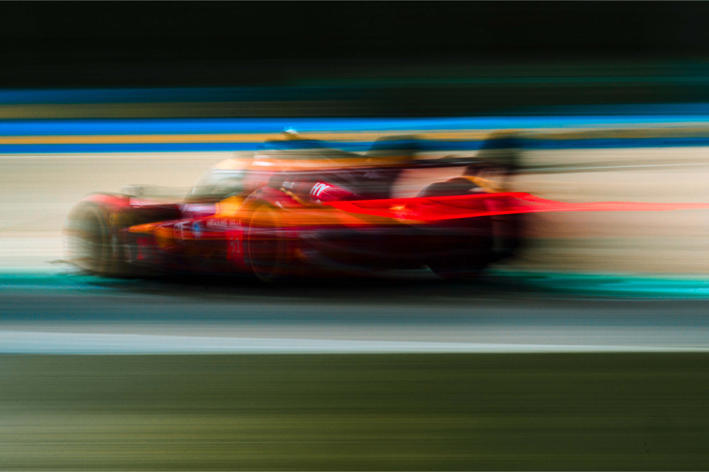

19 — 20 Sep 2026
Historic Minardi Day
Imola · Enzo e Dino Ferrari Circuit
The tenth edition — Formula 1 history, prototypes, GT and historic racing machinery back on track.
Motorsport Heritage · Luxury Reportage · Events
Editorial photography and motion for automotive culture, events, hospitality and luxury details — with the same restraint, timing and atmosphere.

Monaco Historique, Mille Miglia, Villa d'Este, WEC: racing atmosphere, historic cars and the human dimension beyond the track.
View the chapters →Portraits, interiors, hospitality, watches and refined details for discreet visual storytelling — in photo and motion.
View the work →
I am Simone Slawitz, an Italian photographer with an editorial approach and a precise, restrained aesthetic rooted in motorsport heritage. Racing runs in my family: my ancestor Rienzo Slawitz was a driver in 1923.
My work has won the Bruno Boni Photography Competition (2023), the Best B&W Award (2025) and an Honorable Mention at the International Photography Awards (2026).
My story & pressThe tenth edition — Formula 1 history, prototypes, GT and historic racing machinery back on track.
Historic Grand Prix at Mugello Circuit — Italian motorsport heritage.
The 2026 FIA World Endurance Championship season finale at the Temple of Speed.
Available for events, brands and editorial collaborations across Italy and Europe. Every story begins with a conversation.